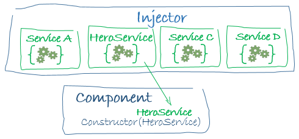

Angular Services
In this chapter we are going to take a closer look at Angular services and learn how to utilize them.
What are Angular Services?
From Angular’s Services Intro:
Service is a broad category encompassing any value, function, or feature that your application needs.
Almost anything can be a service. A service is typically a class with a narrow, well-defined purpose. It should do something specific and do it well.
There is nothing specifically Angular about services. Angular has no definition of a service. There is no service base class, and no place to register a service.
Yet services are fundamental to any Angular application. Components are big consumers of services.
Services are often created in a shared folder, with the purpose of containing all the logic of a component or a complex type of operation. For example, in the case of MyThaiStar, all components which call the server, or have methods with more complex logic, have their own service that implements them. There are also services, which — instead of being used by just one component — are used several times throughout the code, in many components, like the price calculator for example.
Just like components, services have to be declared as a NgModule. In this case via the providers array.
Dependency Injection
The Angular Architecture Documentation says the following about DI:
Dependency injection is a way to supply a new instance of a class with the fully-formed dependencies it requires. Most dependencies are services. Angular uses dependency injection to provide new components with the services they need.
When Angular creates a component, it first asks an injector for the services that the component requires.
An injector maintains a container of service instances that it has previously created. If a requested service instance is not in the container, the injector makes one and adds it to the container before returning the service to Angular. When all requested services have been resolved and returned, Angular can call the component’s constructor with those services as arguments. This is dependency injection.
For more information, please visit the Angular Dependency Injection guide.
Create a new Service
Security or other global services will be stored in a shared folder, at the same level as the rest of the components. Services that are specific to a certain component, will be stored in a folder for the respective component. We can specify the path to a service when creating it with the Angular CLI:
ng generate service <path>/<service_name>Authentication
Authentication is a special service created to maintain user sessions in the application. In the case of our tutorial application it serves as an indicator of the log-in state and stores the name of the user, but it can be extended to store tokens, validate permissions of roles, and so on.
Basically, the objective of this service is to manage, what the user can or can not see, depending on their actions in the application.
Guards
Guards are services, that implement an interface called CanActivate. This interface forces developers to implement the canActivate method, which returns a simple boolean. Is up to you to decide, what conditions you are going to implement, to forbid or allow the navigation to a certain component.
Guards are strongly related to the Router, because routes can carry the property canActivate:[GuardServiceName]. You can create as many Guards as you want, to secure every single component of your app, just as you require.
If your application will have a login process, or special areas not accessible to everyone, we encourage you to use Guards, because even if you hide a navigation-button, the user can still modify the URL in the browser to access a component. With Guards in place, this type of navigation will be forbidden, and you app will not be compromised easily.
Server Communication
Angular uses HTTP to communicate with the application server, but the return call is implemented via an object from the RxJS library. RxJS is a third party library, endorsed by Angular, and used to manage asynchronous calls based on the Observer pattern.
You don’t need to install the RxJS package manually, it comes preinstalled when you create a project via the Angular CLI. You just have to import the correct operators and modules to use it correctly.
Observables work as follows:
-
First you make a HTTP call to your server URL, calling for a service. The server will return an Observable that you can work with, using methods that you can find in the API. The most common method is
.map, which is used to convert the server response object to JSON. This way you have easy access to any data the server sends to you. -
When implemented, all operators/methods of the Observable should return the whole Observable, so the component that consumes the service can subscribe to this method and obtain the data.
-
A component calls the
subscribeservice function, to obtain an Observable object. Thesubscribefunction accepts up to three parameters:-
A function, that executes while everything is going right. It sends a value such as a number, a string, an object, etc. It can be called multiple times, while the Observable is active.
-
A function, that executes only once if something fails. It sends a JavaScript error or exception.
-
An event, that triggers only once, when the Observable becomes inactive.
-
This is the common workflow with Observables. It takes into account, that if you put some code after the subscribe, it will probably be executed before the subscription ends. If you need something to be executed after the subscribe function, you should put it inside of the subscription.
You can find out more about RxJS and Observables on Angular’s Observables page.
Next Chapter: Build your own devon4ng Application